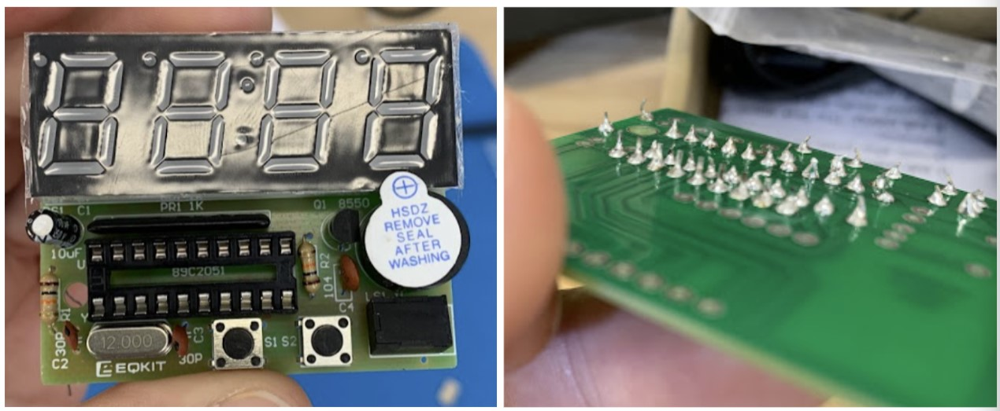
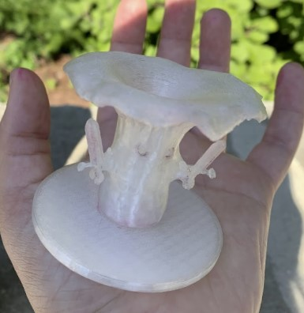
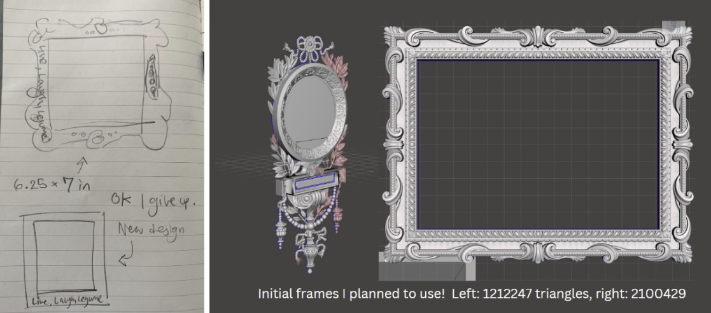
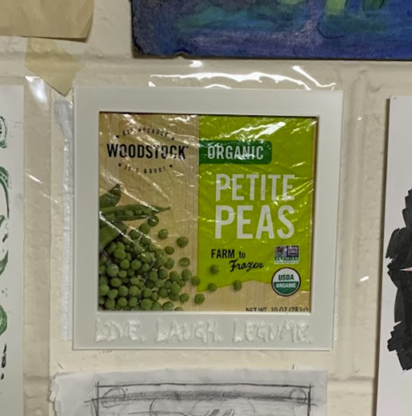

Learning to solder was an unexpectedly rewarding experience! It had always felt a lot harder than it wound up being, breaking down a mental barrier to creating which I didn’t even realize was there. I also found the hands-on nature of soldering really enjoyable -- it tapped into the same mental toolkit I use when making visual art. Also, seeing all the electronic parts up close made me rather interested in computer anatomy; I’ve now downloaded a few lectures on the subject.
Initially, the clock didn’t work. It would light up incorrectly and make a squealing sound as soon as it was plugged in. But, in my opinion, this was for the best! It gave me the opportunity to learn about different failure modes! Since we misdiagnosed the issue a few times, I wound up inspecting it for multiple problems, making me better prepared for future work!
 Some soldering photos - genuinely so proud :)
The primary arena in which I learned was in the actual printing! When I went into the MakerLab to try and print it, the fabulous Avery (of the 3D printing club) was there and able to help out. We ran into quite a lot of issues, and because of that, I got to learn a ton about how the Prusa Mini actually works. The biggest recurring issue was that the filament just didn’t want to extrude. So, I learned about how filament can get chewed up by the gear, and got to remove the Bowden tube, clear the nozzle, and do a bunch more troubleshooting. Eventually, Avery left, which worked out well— many of the same complications arose, so I was able to practice solving them myself. In the end, we deemed it a filament issue, as the same set of issues occurred for 3 different printers (with both the print and a first layer calibration test). When I printed it in a different filament, it worked great!
On the point of 3D printing settings, I used organic supports with .3 top contact z distance to make the supports easy to remove, which they were! I was a bit worried about the swords getting pulled off when removing supports, as their hilts are rather thin. But, they held strong. At one point, I messed with the settings for the support density to see what would happen. I set it low, somewhere below 40%, and on the first layer, it got messed up. So, I set it higher, at 80%, and all was well.
I’m really happy with the final print! It’s not the right color, but I’ll paint it. :) I plan to make a few more of these (friends have asked for copies), and if I had more time, I would change the base to look more natural. Also, in my sketch, the ratio of cap width to stalk width was higher, and I’d love to see if I could make one in which that was the case, though I think it would be a bit harder to print. But, all in all, it does what it’s meant to do, and looks cute doing it!
 The final guy! To be painted.
While with the first design, I learned tons about the physical aspects of 3D printing, the second design is primarily where I learned about CAD. Fundamentally, the software I was using wasn’t built for what I set out to do. My goal was to print a ridiculously intricate frame for my frozen pea bag (which I still plan to do!!), with the words “Live, Laugh, Legumes”, but Fusion couldn’t handle even .1% of the triangles in the mesh of the frames I was working from.
Because of this, I learned a lot more about what types of models to try to bring into Fusion! I tried working with 5-10 different frames before settling on one that was just a rectangle. (I tried a couple frames before which I thought were simple rectangles, but they weren’t! I was bamboozled!) I added my text – initially in the conventional ‘Live Laugh Love’ cursive – but this didn’t want to print, as the letters were too thin. So, I settled on a traditional horror font, as I felt it captured the essence of the state of the project.
All the print settings were the same as the final print of my chantrelle. I printed it almost at the edge of the 7x7 print bed! Possibly because of this, the first time I tried to print it, the edge was a little funky, so I cancelled after a few minutes. The second print turned out fine.
I will definitely remake this!! I want to take this into software that can handle the organic shapes, and make this a truly grand piece of wall decor. I’m talking a light green, ornate masterpiece that will be at least a foot (perhaps a foot and a half) tall, laden with fake pearls and greenery. The peas will get the respect they deserve.
\ The frame atop my beloved bag for frozen peas